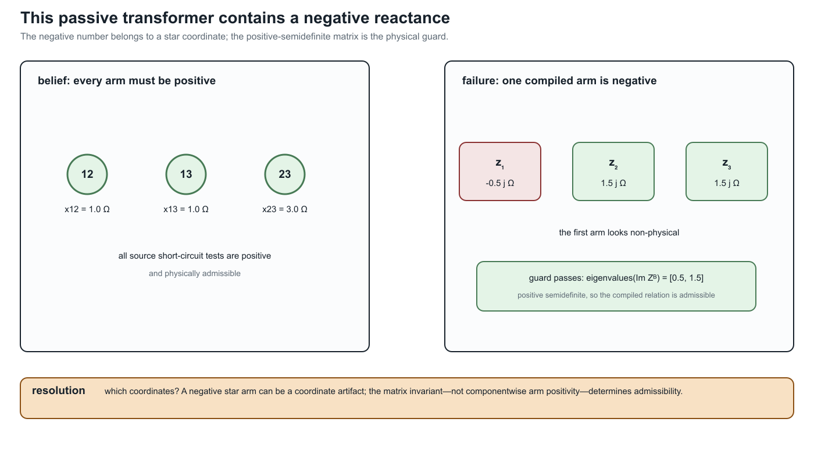

Multiwinding leakage reference compilation
Page status: exact reference-compilation construction with executable round-trip evidence; independent transformer review remains open.
Pairwise short-circuit data are a compact source description of transformer leakage, but they are not yet the matrix relation required by a multiconductor network model. This chapter gives an exact compilation for an arbitrary number of windings. It keeps winding identity, ratios, and limits explicit and does not assume that the general result is a diagonal star.
Source contract
Let transformer $x$ have ordered windings
\[\mathcal K_x=\{1,\ldots,n_x\},\]
The source provides nominal coil voltages $v_k^{\mathrm{nom}}$, winding resistances $r_k$, current limits $\overline i_k$, and a short-circuit reactance $x_{ij}^{\mathrm{sc}}$ for every unordered pair $1\leq i<j\leq n_x$. It must identify the winding $s$ whose voltage base is used for those reactances.
The compilation may independently select any winding $r\in\mathcal K_x$ as its internal reference. Define
\[N_k^{(r)}=\frac{v_k^{\mathrm{nom}}}{v_r^{\mathrm{nom}}}, \qquad r_k^{(r)}=\frac{r_k}{(N_k^{(r)})^2}, \qquad x_{ij}^{\mathrm{sc},(r)} =x_{ij}^{\mathrm{sc},(s)} \left(\frac{v_r^{\mathrm{nom}}}{v_s^{\mathrm{nom}}}\right)^2,\]
and the pairwise impedance referred to the selected winding,
\[z_{ij}^{\mathrm{sc},(r)} =r_i^{(r)}+r_j^{(r)}+\mathrm j x_{ij}^{\mathrm{sc},(r)}.\]
The pair indices describe winding tests, not fictitious independent two-winding transformers. Per-winding limits remain attached to $k$.
Exact reference coordinates
Let $p_r$ enumerate the windings in $\mathcal K_x\setminus\{r\}$ without changing their relative order. For nonreference windings $i$ and $j$, form
\[\left[\mathbf Z_x^{\mathrm B,(r)}\right]_{p_r(i),p_r(j)} =\frac{1}{2}\left( z_{ri}^{\mathrm{sc},(r)}+z_{rj}^{\mathrm{sc},(r)} -z_{ij}^{\mathrm{sc},(r)} \right),\]
using $z_{ii}^{\mathrm{sc},(r)}=0$ on the diagonal. This produces the full $(n_x-1)\times(n_x-1)$ reference impedance matrix. Its off-diagonal entries are generally nonzero and are essential when $n_x>3$.
The construction is invertible on the declared pairwise data:
\[z_{rj}^{\mathrm{sc},(r)} =\left[\mathbf Z_x^{\mathrm B,(r)}\right]_{p_r(j),p_r(j)},\]
and, for $i,j\ne r$,
\[z_{ij}^{\mathrm{sc},(r)} =\left[\mathbf Z_x^{\mathrm B,(r)}\right]_{p_r(i),p_r(i)} +\left[\mathbf Z_x^{\mathrm B,(r)}\right]_{p_r(j),p_r(j)} -2\left[\mathbf Z_x^{\mathrm B,(r)}\right]_{p_r(i),p_r(j)}.\]
Thus the compilation forgets none of the pairwise tests. It changes their coordinates and exposes a matrix factor suitable for network assembly.
External winding admittance
Let $\mathbf C_x^{(r)}\in\mathbb R^{(n_x-1)\times n_x}$ have row $p_r(i)$ equal to $\mathbf e_r^\mathsf T-\mathbf e_i^\mathsf T$, and let $\mathbf D_x^{(r)}=\operatorname{diag}(N_1^{(r)},\ldots,N_{n_x}^{(r)})$. When $\mathbf Z_x^{\mathrm B,(r)}$ is nonsingular, the leakage admittance in the external winding coordinates is
\[\mathbf Y_x^{\mathrm w} =(\mathbf D_x^{(r)})^{-1} (\mathbf C_x^{(r)})^\mathsf T (\mathbf Z_x^{\mathrm B,(r)})^{-1} \mathbf C_x^{(r)} (\mathbf D_x^{(r)})^{-1}.\]
This is a compilation of the leakage relation. Wye/delta terminal-to-coil incidence, terminal ordering, tap decisions, and network interconnection are separate factors and must be composed explicitly.
Reference-choice invariance
Changing $r$ changes the impedance base, reference differences, and entries of $\mathbf Z_x^{\mathrm B,(r)}$. It does not change the external relation in winding-own voltage and current coordinates:
\[\mathbf Y_x^{\mathrm w,(r)}=\mathbf Y_x^{\mathrm w,(q)}, \qquad r,q\in\mathcal K_x.\]
This equality is the appropriate invariant. Comparing the internal $Z_B$ matrices directly would be a coordinate error because they use different impedance bases and reference-difference rows. The executable rule compiles every possible $r$ and compares the resulting external admittances. For the running BMOPFTools fixture, the schema convention makes winding 1 the source impedance reference $s$; the generated certificate records that interpretation separately from the selected compilation reference $r$.
Three windings are the special case
For $n_x=3$, the familiar star/T arms are
\[z_1=\tfrac12(z_{12}^{\mathrm{sc}}+z_{13}^{\mathrm{sc}}-z_{23}^{\mathrm{sc}}), \quad z_2=\tfrac12(z_{12}^{\mathrm{sc}}+z_{23}^{\mathrm{sc}}-z_{13}^{\mathrm{sc}}), \quad z_3=\tfrac12(z_{13}^{\mathrm{sc}}+z_{23}^{\mathrm{sc}}-z_{12}^{\mathrm{sc}}).\]
An individual arm reactance can be negative without invalidating the pairwise test set. The implemented physical guard therefore checks positive semidefiniteness of the symmetric matrix $\operatorname{Im}(\mathbf Z_x^{\mathrm B,(r)})$; it does not impose a componentwise nonnegative-arm rule. The executable tests include a valid negative-arm case and a nearby non-PSD rejection.
The reader-facing witness makes the distinction concrete: three positive pairwise tests $(1.0,1.0,3.0)\ \Omega$ compile to a star with $\operatorname{Im}(z_1)=-0.5\ \Omega$ and $\lambda(\operatorname{Im}(Z_B))=(0.5,1.5)$. The negative entry is a coordinate result, not a negative physical test. The generated evidence is negative_star_arm_witness in experiments/generated/multiwinding-leakage-compilation-certificate.json.

Running transformer
For fixture transformer $x_1$, all three referred winding resistances are $0.38875225\ \Omega$. The compiled matrix is
\[\mathbf Z_{x_1}^{\mathrm B}= \begin{bmatrix} 0.7775045+\mathrm j4.665027 & 0.38875225+\mathrm j3.110018\\ 0.38875225+\mathrm j3.110018 & 0.7775045+\mathrm j5.4425315 \end{bmatrix}\ \Omega.\]
Its reactance eigenvalues are approximately $1.91956$ and $8.18800$, and the round trip recovers the three source reactances exactly to floating-point tolerance. The corresponding star-arm reactances are $3.110018$, $1.555009$, and $2.3325135\ \Omega$.
Repeating the compilation with each of the three windings as $r$ gives distinct matrices on the corresponding voltage bases. After mapping back to winding-own coordinates, the largest entrywise difference among their external admittance matrices is $2.84\times10^{-14}\ \mathrm S$. The certificate records this fixture-level invariance check.
The generated certificate TR-XFMR-002 classifies this as an exact_compilation. Its typed interfaces state that winding limits and external coil quantities remain at the boundary, while reference-coordinate states are introduced internally. The package-independent implementation and positive, negative, incomplete-data, and four-winding tests live under experiments/transformations and experiments/test.
Decision-model boundary
The exactness claim concerns the fixed-parameter leakage relation and the declared pairwise source data. A target optimization model is decision-exact only if it also retains winding current limits, connection factors, tap or phase-shift decisions, thermal states, and any objective terms indexed by the original windings. The certificate retains the fixture's per-winding current limits by identity; it does not claim to compile an adjustable tap model.
Multiwinding terminal leakage assembly performs the next exact composition: it combines this coil-coordinate relation with grounded-wye and delta connection factors while retaining a lifted coil-current constraint map.